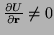
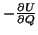
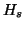
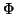
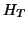
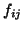
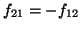
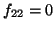
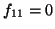
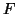

In the case where the system is dynamic and atoms are given kinetic energy, it becomes obvious that the definition of the tip force given in the previous section no longer holds, since the forces on free atoms are no longer zero:

. It is also clear that because of this when the entire tip is far from the surface, region 1 will experience large fluctuations in force of Eq. (14) due to oscillating other tip atoms belonging to the adjacent region 2. Moreover, these fluctuations will not decay with the distance from the surface which is in clear contradiction with what one would expect from the tip force which is physically due to the interaction with the surface. Even for a completely isolated tip the force fluctuations are large although, since region 2 atoms vibrate around equilibrium positions, the average force fluctuates around zero value. Hence, we conclude that the final form of Eq. (14) can only be used for calculating the force in mechanical equilibrium or when calculating the average force during MD simulations. If we are interested in the actual fluctuations of the tip force for any given tip positionWhat is needed in order to provide an alternative expression for the tip force which would work for both static and dynamic situations, is the definition of an instantaneous force for arbitrary positions of atoms in the junction. At first, one might be tempted to define the tip force as the partial derivative,

, of the total system energyIn order to obtain an appropriate definition of the tip force, we invoke a general non-equilibrium microscopic consideration in which the total Hamiltonian of the ``tip - surface'' system was shown [11] to be split as follows:

is the sum of the independent microscopic Hamiltonians of the isolated surface and the isolated tip. Either of those contains kinetic and potential energies of the constituent atoms. Note that atomic positions in the tip part of are defined relatively to the fixed part of the tip (e.g. using internal coordinates). Note also that there is no interaction between atoms in the surface and in the tip included in . This interaction is completely included in the second term,
, in Eq. (16). Since absolute positions of the tip atoms are to be used while specifying the tip-surface interaction, depends both on the atomic positions and the tip height,
is the macroscopic Hamiltonian of the tip which contains kinetic and elastic energy of the cantilever as well as the excitation term. It depends exclusively onIt then follows from the microscopic non-equilibrium theory that the instantaneous microscopic force acting on the tip (which completely includes the stochastic contribution due to atomic vibrations [12]) should be defined as follows:

is the sum of the vertical forces acting on all the atoms in regionThe above expression does not require that the system is in equilibrium, and, due to partitioning of the total Hamiltonian discussed above, Eq. (16), it naturally tends to zero when the tip and the surface are separated. It is also equivalent to the static definition (14) if the system is in equilibrium. Indeed, since

,
and
at any given time
asIn practical calculations the expression for the force (17) is not very convenient since it requires calculation of partial forces due to different regions to be recorded during each simulation step. The equivalent expression (18), which will be referred to as the dynamic definition of the tip force (as opposed to the static definition of Eq. (14)) is much more convenient since it contains the sum of total forces acting on all atoms of the tip. This expresion is used in the code when calculating the continuous force on the tip during a simulaion.